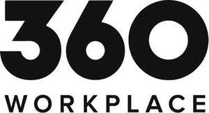

Trade Mark Journal No.2026/005 30 January 2026
UK00004315559 24 December 2025 (35,37,42)

- Class 35
- Business relocation services; procurement services for others, namely, purchasing goods and services for use in commercial premises including offices, shops, light industrial buildings, warehouses and catering establishments; retail services connected with the sale of furniture and furnishings for offices and commercial establishments; business strategic planning for commercial environments; conducting business research and surveys for commercial environments; business data analytics, namely, observation, collection and compilation of data relating to commercial environments; provision of business information in the area of global sustainable business solutions, decarbonisation, and ESG compliance; preparation and compilation of business audit reports, impact assessments, and compliance documentation relating to ESG, carbon and sustainability; business consultancy services relating to environmental impact, ESG strategy, and corporate sustainability goals, targets and objectives; business consultancy services in relation to sustainability of commercial environment design; advisory services relating to business management and organisational efficiency; consultancy relating to the implementation of commercial environment strategies for enhancing employee experience including physical and mental wellbeing; benchmarking services for commercial environment management purposes; business advisory services relating to commercial environment performance; business consultancy and advisory services relating to sustainable commercial environmental responsibility, and ethical sourcing; business consultancy and advisory services relating to the implementation and use of digital systems and solutions to enhance employee productivity; provision of information, consultancy and advisory services relating to all the aforesaid services.
- Class 37
- Advisory services relating to the construction and re-development of buildings; real estate development and advisory, information and consultancy services relating thereto; construction, maintenance, renovation, repair, refurbishment and sustainability improvement, including as part of property development; building and construction services; building decoration, refurbishment, re-development, alteration, installation, construction, maintenance and repair, and advisory services related thereto; construction project management services; property development; advisory services relating to building refurbishment; interior refurbishment of buildings; building refurbishment services; interior and exterior refurbishment, renovation and decoration services; interior fitting-out of buildings; renovation, restoration, refurbishment, repair and decoration of buildings; supervision of building construction, restoration and renovation; installation of electrical and electronic appliances; assembling, installation and re-installation of furniture and furnishings; assembling and installation of shelving and storage systems; maintenance and repair of buildings and utilities in buildings; maintenance and repair of parts and fittings for buildings; installation of energy-saving apparatus; supervision of the installation and rollout of energy-efficient systems, environmental engineering systems, decarbonisation systems and sustainability-focused building enhancements and upgrades; installation, maintenance and repair of intelligent systems for buildings (computer hardware and networks); maintenance, installation and repair of plumbing, heating, gas systems, energy systems, eco energy systems, renewable heating and energy systems, flooring and ceilings, wall coverings, joinery, partitions, security systems and safety equipment, video surveillance systems, fire detection systems, air conditioning systems, lighting and units for cooking, washing, drying, refrigeration, freezing, ventilation, water treatment, automation systems, technical management systems and audiovisual equipment; all relating to commercial premises including offices, shops, light industrial buildings, warehouses and catering establishments; provision of information, consultancy and advisory services relating to all the aforesaid services.
- Class 42
- Design services, all relating to interior or exterior decoration and furnishing of buildings, construction of buildings, interiors of buildings, exteriors of buildings, outdoor recreation areas and to sculptural, decorative and functional arrangements of outdoor areas; design of layouts of building exterior and building interiors; office layout, kitchen layout and bathroom layout design services; architectural services; land and building surveying; construction planning; planning and laying out commercial properties; technical project-management; environmental, sustainability and strategic planning information, consultancy and advisory services; sustainability assessments for property development, construction, and infrastructure projects; guidance relating to environmental management systems (EMS), net zero pathways, and ESG performance; consulting services in the field of commercial environment automation; technical consultancy relating to property technology and smart buildings; consultancy services relating to the technical details of sustainable building design and performance optimisation; consultancy services relation to energy performance, and sustainable property operations; integration of computer systems and networks; design and development of digital solutions for commercial environments collaboration and productivity; IT consultancy services for implementing technology to improve employee experience; design of indoor and outdoor layout and configuration of commercial environments to enhance employee productivity and enhance employee physical and mental wellbeing; advisory services relating to the technological aspects of commercial environment design; provision of information, consultancy and advisory services relating to all the aforesaid services; all relating to commercial premises including offices, shops, light industrial buildings, warehouses and catering establishments.
Fourfront Group Limited
Representative: Hansel Henson Limited